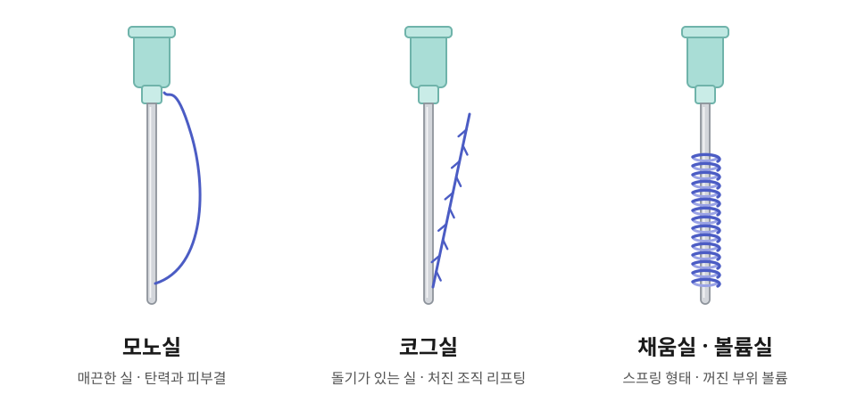

01 · 탄력
모노실
표면이 매끈한 가는 실입니다. 여러 가닥을 촘촘하게 넣어 강하게 당기기보다 피부 탄력과 피부결 개선을 돕습니다. 코그실과 함께 써서 리프팅을 보조하기도 합니다.
주요 부위 · 볼, 턱선, 입가, 눈가, 목
- 피부가 얇고 탄력이 떨어진 분
- 강한 리프팅보다 자연스러운 탄력을 원하는 분
- 잔주름과 피부결이 고민인 분
홈 > 피부미용 > 리프팅 > 맞춤형실리프팅
처짐의 방향과 볼륨을 함께 설계하는 실리프팅
THREAD LIFTING
피부 탄력이 떨어지면서 볼과 턱선, 팔자 부위가 아래로 내려오면 얼굴이 무겁고 피곤해 보일 수 있습니다. 실리프팅은 피부 아래에 녹는 의료용 실을 넣어 처진 조직을 원하는 방향으로 끌어올려 지지하고, 실 주변의 조직 반응으로 피부 탄력 개선을 함께 돕는 시술입니다.
맞춤형실리프팅은 처짐 정도, 피부 두께, 지방 분포, 볼륨이 줄어든 정도를 확인한 뒤 실의 종류와 넣는 방향을 사람마다 다르게 정합니다.
실리프팅은 많이 당기는 시술이 아니라, 어디를 어느 방향으로 옮기고 어디에 볼륨을 채울지 판단하는 시술입니다.

THREAD
실은 굵기와 길이, 돌기 모양, 구조에 따라 하는 역할이 다릅니다. 얼굴 상태에 맞춰 여러 종류의 실을 함께 사용합니다.
01 · 탄력
표면이 매끈한 가는 실입니다. 여러 가닥을 촘촘하게 넣어 강하게 당기기보다 피부 탄력과 피부결 개선을 돕습니다. 코그실과 함께 써서 리프팅을 보조하기도 합니다.
주요 부위 · 볼, 턱선, 입가, 눈가, 목
02 · 리프팅
실 표면의 미세한 돌기(cog)가 피부 아래 조직을 잡아, 처진 조직을 원하는 방향으로 옮기고 지지합니다. 볼과 턱선처럼 처짐이 눈에 띄는 부위에 주로 사용하는 대표적인 리프팅 실입니다.
주요 부위 · 처진 볼, 심부볼, 턱선, 이중턱 주변, 팔자, 마리오네트 라인
03 · 볼륨
스프링이나 꼬임 형태처럼 입체적인 구조로, 당기기보다 꺼진 부위의 볼륨을 보완하는 데 중점을 둔 실입니다. 볼륨 감소가 뚜렷하면 스킨부스터와 함께 사용합니다.
주요 부위 · 팔자, 앞볼, 꺼진 볼, 입가, 마리오네트 라인
시술 부위 · 볼, 앞볼, 광대 아래, 팔자, 심부볼, 턱선, 이중턱 주변, 입가, 마리오네트 라인, 목
| 구분 | 맞춤형실리프팅 | 장비 리프팅 (고주파·초음파) |
|---|---|---|
| 방식 | 녹는 의료용 실을 피부 아래에 삽입 | 피부와 피하조직에 에너지 전달 |
| 작용 | 처진 조직의 위치를 옮기고 지지 | 조직 수축과 탄력 개선 유도 |
| 이런 고민에 | 볼·턱선 처짐이 뚜렷할 때, 볼륨 감소가 함께 있을 때 | 피부 탄력 저하가 주된 고민일 때 |
얼굴 상태에 따라 실리프팅과 고주파·초음파 리프팅을 함께 계획할 수 있습니다. 디자인리프팅 보기 →
PROCESS
CAUTION
※ 시술 효과와 유지 기간은 실의 종류와 개수, 피부 상태에 따라 개인차가 있습니다.
FAQ
코그실과 볼륨실 모두 시술 직후부터 변화가 나타나는 편입니다. 코그실은 처진 조직이 옮겨지면서, 볼륨실은 꺼진 부위가 채워지면서 달라진 모습을 바로 느낄 수 있습니다. 다만 처음에는 붓기와 당김이 함께 있어 초기 모습이 최종 결과는 아니며, 붓기가 빠지고 조직이 자리 잡으면서 얼굴선이 안정됩니다. 모노실의 탄력 변화는 시간이 지나며 서서히 나타납니다.
실의 종류와 개수, 피부 두께, 지방량, 처짐 정도, 생활습관에 따라 개인차가 있습니다. 실은 시간이 지나면서 몸속에서 녹아 없어지며, 실이 남아 있는 기간과 효과가 유지되는 기간은 같지 않을 수 있습니다. 보통 1회 시술 후 1년 이후에 다시 상담받으시길 권합니다.
네, 가능합니다. 피부 탄력 저하는 장비 리프팅으로, 뚜렷한 조직 처짐은 실리프팅으로 나누어 관리하는 경우가 많습니다. 얼굴 상태를 확인한 뒤 함께 계획해 드립니다.
처짐이 매우 심하거나 늘어진 피부가 많으면 실리프팅만으로는 원하는 만큼 개선하기 어려울 수 있습니다. 지방이 많은 얼굴, 피부가 아주 얇은 얼굴, 볼륨이 많이 줄어든 얼굴도 접근 방법이 다릅니다. 실의 개수보다 처짐의 원인을 먼저 확인하고 시술을 정합니다.
시술 전 마취 크림을 발라 불편감을 줄입니다. 시술 후에는 한동안 당기는 느낌이나 누르면 아픈 느낌이 있을 수 있으며 대부분 시간이 지나면서 나아집니다.
네, 바로 일상생활이 가능합니다. 다만 붓기나 멍이 생길 수 있고, 약 1~2주 동안은 입을 크게 벌리거나 얼굴을 세게 누르는 행동을 피해 주세요.